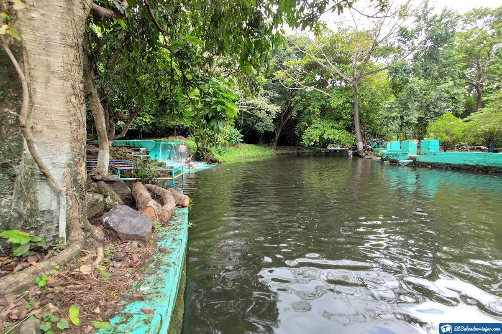
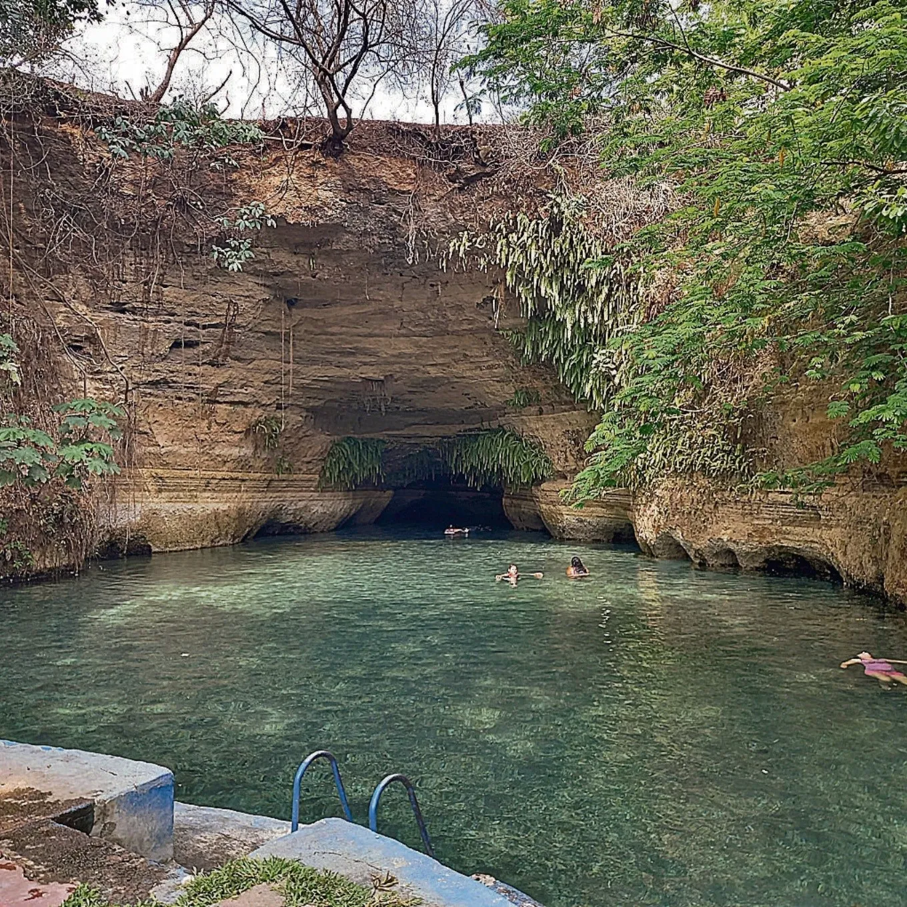
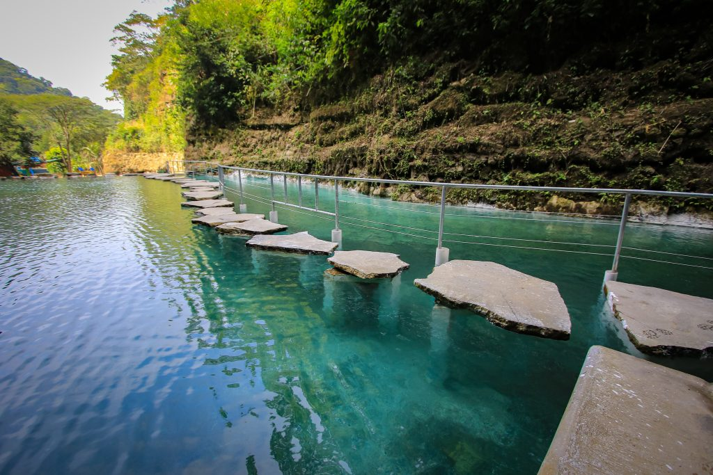
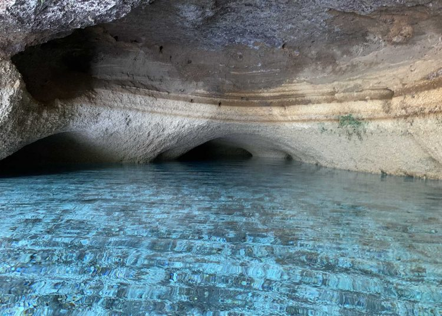
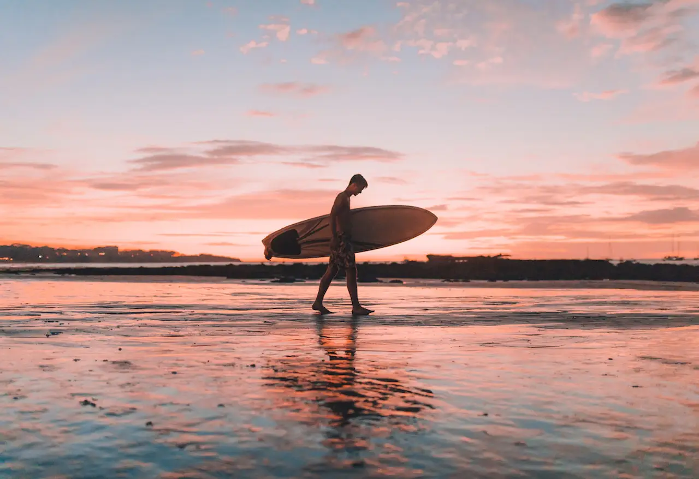

Bienvenidos a la página oficial de Viajero Max
Explora el mundo con nosotros. Ofrecemos las mejores guías y servicios para que tus viajes sean inolvidables. Descubre destinos increíbles y vive experiencias únicas.
Contacto
Servicios
1. Caluco
A 48 kilómetros de San Salvador está Caluco, en el departamento de Sonsonate, y es un destino turístico de los más atractivos, tanto para salvadoreños como para extranjeros. El lugar es famoso por su sopa de gallina India y la gallina asada como plato típico.
Precios: $1.50 por persona.
Evaluación del Cliente:
Valoración: 0 estrellas
Cómo llegar
Desde San Salvador, toma la Carretera Panamericana (CA-1) en dirección oeste. En el camino, desvíate hacia Sonsonate y sigue las señales que indican la dirección hacia Caluco. El destino se encuentra en el Departamento de Sonsonate.
Ubicación
Horario: Lunes a Domingo, 8:00 AM - 6:00 PM
2. Playa Las Flores
Una playa paradisíaca con aguas cristalinas y arena blanca. Ideal para surfistas y amantes de la naturaleza.

Precios: Entrada gratuita.
Evaluación del Cliente:
Valoración: 0 estrellas
Cómo llegar
La Playa Las Flores se encuentra en la costa este, a unos 150 km de la capital. Puedes llegar en coche o en transporte público tomando la ruta CA-2 hacia San Miguel.
Ubicación
Horario: Abierto las 24 horas.
3. Turicentro "El Capulín"
Nacimiento de aguas termales y cristalinas, además podras adentrarte a explorar las cuevas y vivir una experiencia única
Precios: $2.00 por persona.
Evaluación del Cliente:
Valoración: 0 estrellas
Cómo llegar
El centro turístico El Capulín se encuentra ubicado en el cantón El Salamar, a 800 metros al oriente del parque municipal de Moncagua. Si se va en vehículo propio se viaja por la carretera Panamericana con dirección a San Miguel.
Ubicación
Horario: De lunes a domingo, 6 AM - 5 PM
4. Parque Nacional "Cerro Verde"
Complejo de volcanes accesibles que cuenta con sendas, vistas pintorescas y un lago en cráter de gran tamaño. Cuenta con 2 restaurantes con increibles vistas, excursiones hacia los volcanes Izalco y el de Santa Ana, y recorridos por la fauna del parque.

Precios: $1.50 por persona.
Evaluación del Cliente:
Valoración: 0 estrellas
Cómo llegar
El Parque Nacional Cerro Verde está ubicado en el departamento de Santa Ana
Ubicación
Horario: Lunes a Domingo, 8:00 AM - 6:00 PM
5. Parque Recreativo "Los Chorros"
Este hermoso parque acuático, Los Chorros, contiene una belleza natural única en todo el país. El parque contiene un aspecto innovador el cuál es el anfiteatro al aire libre, en el cuál se desarrollan actos con enfoque cultural, educativa y deportivo; también cuenta con amplias instalaciones en el área de vestíbulo y unas rampas inclusivas.
Precios: $1.50 - $3.00 por persona.
Evaluación del Cliente:
Valoración: 0 estrellas
Cómo llegar
Parque recreativo Los Chorros, ubicado en Cantón El Manguito, Colón, Departamento de La Libertad, El Salvador.
Ubicación
Horario: De lunes a domingo, 8 AM - 4 PM
Galería

Somos un equipo de guías turísticos dedicados a ofrecer las mejores experiencias de viaje. Conoce más sobre nosotros y nuestros valores.
Nuestra Historia
Todo comenzó cuando 5 amigas (Diana, Evelyn, Johanna, Melissa y Mónica) se dieron cuenta que
muchos de los sitios web de viajes solo incluyen lugares muy caros y muy populares. Ellas querían
tener una alternativa económica y diversa (no lo mismo de siempre). Por esta razón, ellas decidieron
crear lo que querían ver, un sitio web que mostrara recomendaciones de lugares muy bonitos del país,
pero no muy conocidos.
MISIÓN
Buscamos simplificar la búsqueda de lugares para hacer turismo en El Salvador,
queremos que disfrutes del país sin coplicarte y sin gastar de más.
VISIÓN
Queremos ser el sitio web de referencia sobre turismo en El Salvador
Blog
Descubre las Maravillas de Caluco
Publicado el 15 de Agosto de 2024

Caluco es un destino imperdible para quienes buscan una combinación perfecta entre cultura y naturaleza. Desde su famosa sopa de gallina India hasta sus impresionantes paisajes, descubre todo lo que este lugar tiene para ofrecer.
Las Mejores Playas para Surfear en El Salvador
Publicado el 5 de Septiembre de 2024
El Salvador es conocido por sus excelentes condiciones para el surf. En este artículo, te presentamos las playas más populares y los mejores consejos para disfrutar al máximo tu experiencia surfera.
Consejos para Viajar con un Presupuesto Limitado
Publicado el 20 de Septiembre de 2024
Viajar no tiene que ser costoso. Descubre estrategias efectivas para ahorrar dinero sin sacrificar la calidad de tus experiencias de viaje.